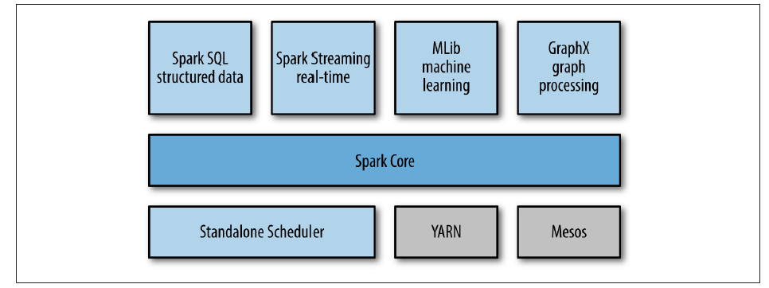
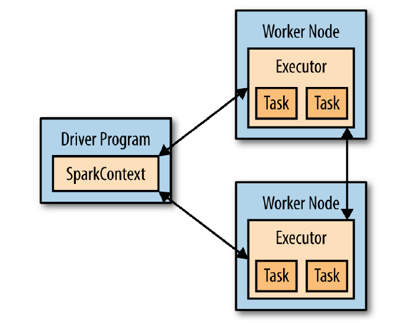
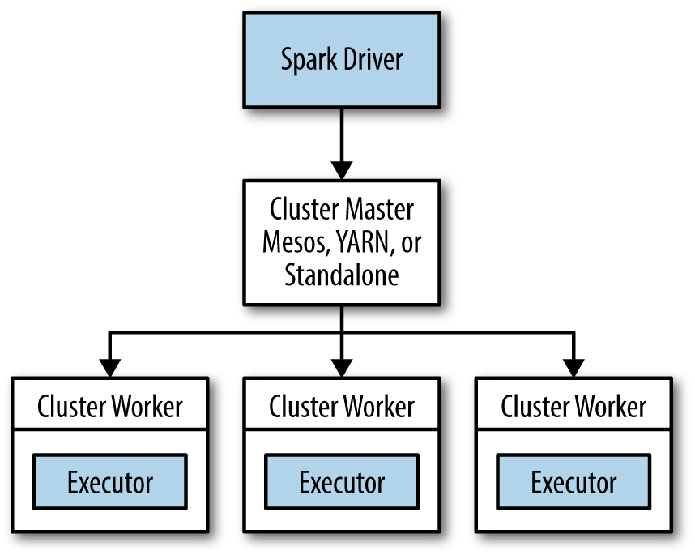
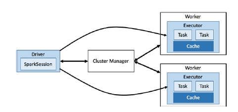

Syrian team in Raisoni
Syrian team in Raisoni
Apache Spark
Introduction :
In a very short time, Apache Spark has emerged as a new generation of big data processing and is being implemented faster than ever before. Spark runs the batch applications supported by Hadoop and supports a variety of workloads including interactive queries, streaming, machine learning, and graphic processing. With the rapid rise in popularity of Spark, The lack of good reference material you speak of is a major concern. Spark offers three main benefits, first, it is easy to use, second, Spark is fast, enables the user to interactively use and implement complex algorithms, and third, Spark is a generic working platform allowing the combination of multiple types of computations (such as SQL queries, word processing, and machine learning) which required Previously different work platforms.
A Unified of Spark :
Spark project contains many closely integrated components. At its core, Spark is a “computer engine” responsible for scheduling, distributing, and monitoring applications that consist of many computational tasks across many operating devices.
At its core, Spark is fast and comprehensive with many components running high-level workloads such as SQL or machine learning. These components are designed to interact with each other, allowing the user to combine them similarly to adding libraries to a software project. The following are the components of Spark in brief:

1. Spark Core :
It contains the main functions of Spark. The kernel contains components for task scheduling, memory management, failure recovery, and interaction with storage systems. The Spark kernel contains a set of APIs that contain the definition of the Resilient Distributed Data‐ sets (RDDs) of Spark. distributed over multiple nodes which are processed in parallel.2. Spark SQL :
It is a package dedicated to dealing with structured data and enables developers to integrate SQL database queries and operations on RDD.3. Spark Streaming :
A Spark component that enables processing of live broadcasts of data such as log files generated by web servers or message queues containing status updates posted by users of a web service. Spark Streaming provides an API for processing data streams that closely matches the Spark Core RDD API, making it easier for programmers to know the project and transition between applications that process data stored in memory, on disk, or data that arrives in real time. Spark Streaming is designed to provide the same degree of failure tolerance, throughput and scalability as a Spark core.4. MLib :
Spark library to support machine learning algorithms (ML) MLlib provides multiple types of machine learning algorithms, including classification, regression, clustering, and collaborative filtering, as well as support functions such as model evaluation and data import.5. GraphX :
Libraries specializing in distributed processing on graphs (graphs).6. Cluster Managers :
Spark is designed to operate efficiently on a cluster of one to several thousand computer nodes, and to achieve this while maximizing flexibility, Spark can run a variety of cluster managers including YARN and is a viable option if Hadoop is pre-installed and Apache Mesos If we already have Apache Mesos on the cluster and a simple cluster manager built into Spark itself is called Standalone Scheduler and is appropriate if Spark is installed on a cluster of empty devices .
Storage Layers for Spark :
Spark can create distributed datasets from any file stored in the Distributed File System (HDFS) or other storage systems (Amazon S3, Cassandra, Hive, HBase, etc.). It is important to stress that Spark does not require Hadoop because it simply has support for other storage systems not supported by Hadoop. It supports text files, sequential files, Avro, Parquet etc...
Resilient Distributed Dataset (RDD) :
RDD is the basic data structure of Apache Spark, which is simply a distributed set of immutable and static elements that are logically partitioned and computed on the different nodes in the cluster. Users create RDDs by loading an external data set into their driver program and Spark automatically divides each RDD into multiple partitions and distributes the data in the RDDs across the cluster and parallelizes your operations on them.
Once created, it can be performed with two types of operations: transformations and actions. Transformations create a new RDD from a previous one by making modifications to it (one common transformation is to filter data that matches the value passed to the predicate) Example we can use the filter() transformation to create a new RDD that holds only strings containing a particular word.
RDDs are recalculated by default every time an action is run on them, so when the RDD needs to be reused in multiple actions, they can be kept in different user defined locations via the RDD.persist() function. After it is first computed, Spark will store the contents of the RDD in memory divided across devices in the cluster. RDDs can also be saved to disk instead of memory.
The behavior of not keeping RDD by default may seem useful when dealing with large data sets. When you deduce new RDDs from each other using transformations, Spark keeps track of the set of dependencies between the different RDDs, called a lineage graph, and uses this information to calculate each RDD on demand and recover lost data if part of the RDD is missing (Fig. 5-2) Graph of Ratios:
RDD achieves partial fault tolerance through the feature of tracking the transfer rates applied to RDD, where the transfers applied to RDD are recorded to be repeated when data is lost or the cluster node fails, and high efficiency is achieved through parallel processing across multiple nodes in the cluster, reducing Duplicate data between those nodes.
Lazy Evaluation :
Transformations on RDDs are evaluated lazy which means that they will not be executed until the subsequent action needs its result. Lazy evaluation means that when we invoke a transform on an RDD (for example, calling map()) the operation is not executed immediately, instead Spark internally logs metadata that indicates that this transformation has been requested on that RDD, That is, instead of retaining the data contained in RDD, how or what transformations needed to compute the data are preserved, which avoids the need to process the data unnecessarily. Likewise for the process of loading data into RDD, when sc.textFile() is called, the data is not loaded until it is necessary , Spark uses lazy evaluation to reduce the number of times data is accessed by grouping processes together, In systems like Hadoop, developers often have to spend a lot of time thinking about how to group processes together to reduce the number of times MapReduce accesses data. Organize their programs into smaller, more manageable operations.
Distributed Execution in Spark :
Work in Spark consists of a direct acyclic (DAG) scheme for a group of stages, each roughly equivalent to a corresponding or reduction phase in MapReduce, the stages are divided into tasks and run in parallel on portions of an RDD distributed across the cluster — just like the tasks in MapReduce - The work runs as an application (represented by a copy of SparkContext) and the application can run more than one work, sequentially or in parallel, and provides a mechanism for accessing the work to an RDD that was cached by a previous work in the same application.
Each Spark application consists of a driver program that launches different parallel operations on the cluster. The driver contains the application's main function, defines datasets distributed on the cluster, and then applies the operations to them. The driver accesses Spark through an intent called SparkContext. which represents the connection with the cluster and through which we can build a new RDD, to run operations on RDD the driver usually manages a number of nodes called executors, for example if we are running a count() operation on the cluster, different devices may perform the computation on lines in different ranges of the file, Spark takes the desired function It is executed automatically and sent to the executing nodes, so you can write code in one driver and parts of it are automatically run on multiple nodes, Figure (5-3) shows how Spark works.

Spark Cluster Components :
In distributed execution mode, Spark uses a master/slave architecture with one central coordinator and many distributed worker nodes called the driver, The launcher communicates with many distributed workers, each of which is called an executor. The launcher program runs in its own Java process, and each implementer runs in a separate Java process as well, both operator and its implementers make up the Spark application. The Spark application is launched on a group of devices using an external service called a cluster manager, which knows the workers, where they are located, the size of memory, and the number of cores of each working node.


The Driver :
The trigger is the process in which the main() method is run. It is the process that runs the user code that creates the SparkContext, creates the RDDs, performs transformations and actions, and once the trigger finishes, the application terminates. When the trigger is running it does two things:1. Converting a user program into tasks :
Spark is responsible for converting a user program into actual execution units called tasks. All Spark programs follow the same architecture: it generates RDDs from some input, derives new RDDs from the originator using transformations, and performs actions to collect or save data, Spark generates a directed acyclic graph DAG from the operations, When the driver runs, it converts this logical graph into an actual execution plan and transforms a Spark (DAG) into a group of stages, each stage in turn consisting of multiple tasks and tasks are grouped and prepared to be sent to the cluster. Tasks are the smallest unit of work in Spark. The user program can Typical launch hundreds or thousands of individual missions.2. Scheduling of tasks on the two implementers :
Depending on the actual execution plan, the operator must coordinate the scheduling of individual tasks on the two implementers so that when the two implementers start the operator requests to reserve resources for implementers on working nodes and release them. Then the implementers register themselves with the operator so that it always has full visibility of the application implementers. Each executor represents a process capable of running tasks and storing RDD data. The Spark driver will look at the current set of executors and try to schedule each task to a suitable location based on the position of the data. Task execution may be affected by cached data, so the driver also tracks the location of the cached data and uses it to schedule future tasks that access that data.Executors :
Implementers in Spark are working processes responsible for running individual tasks in a Spark business. Executors run once at the start of a Spark application and usually run for the life of the application, although Spark applications can continue if the implementers fail. Executors have two roles, first the implementers run the tasks that make up the application and return the results to the launcher. Second, it provides in-memory storage for RDDs that are cached by user programs, through a service called Block Manager that lives inside each port, and since RDDs are cached directly inside the two ports can run tasks along with the cached data.
Spark on YARN :
Running Spark on YARN provides integration with other Hadoop components and is the most convenient way to use Spark When you already have an existing Hadoop system, Spark provides two deployment modes to run on YARN: